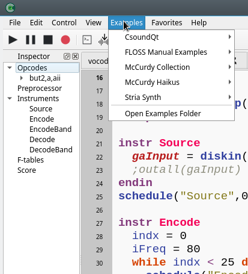
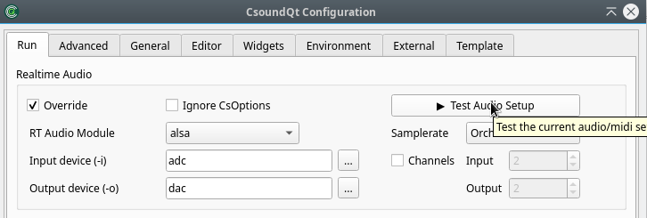
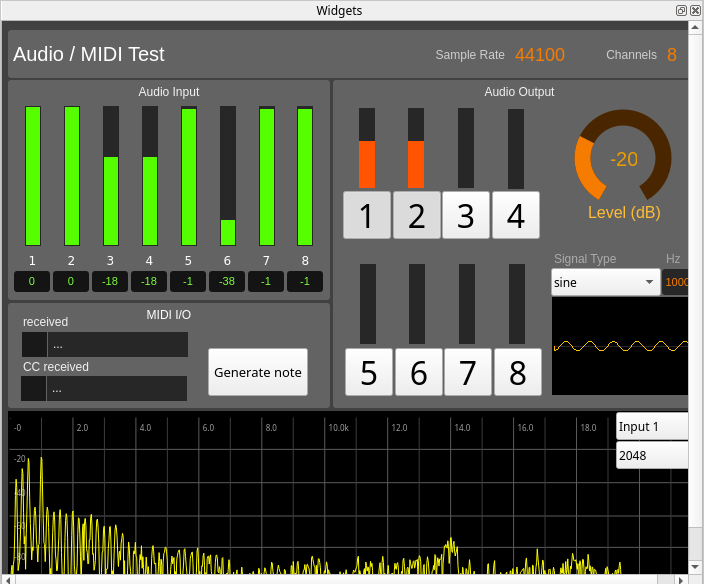
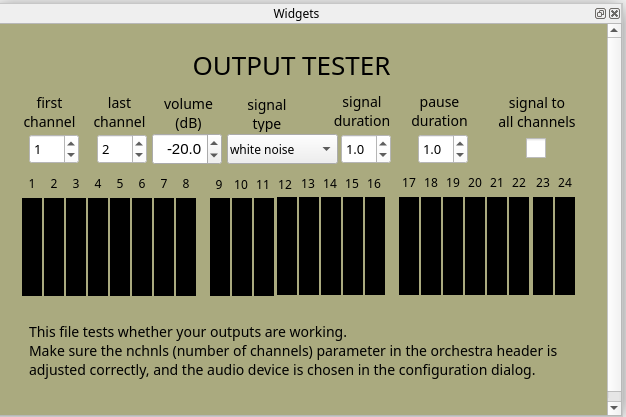
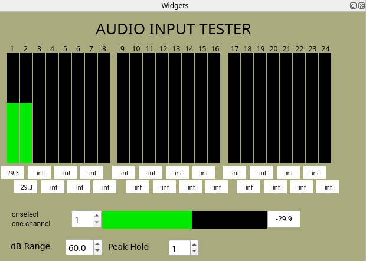
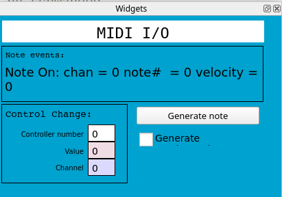
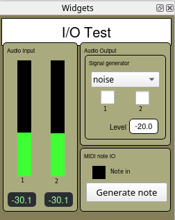
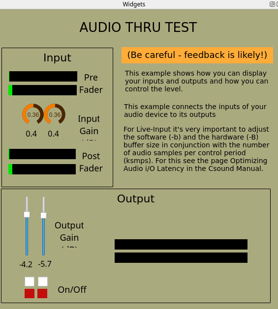

Examples
CsoundQt offers a rich and diverse example collection in its Examples Menu:

Useful
We want to highlight here some essential examples which are useful to test the audio and MIDI connections. All are in the Examples > CsoundQt > Useful directory.
Audio/Midi test
This is an extended examples to test all functionality. It can also be started via the Configure panel:


It somehow replaces three older tests for Audio Output, Audio Input and MIDI test which nevertheless can still be useful because of some features:
Audio Output Test

Audio Input Test

MIDI IO Test

IO Test
As a simple example for stereo, this is still useful:

Audio Thru Test
This is useful to test the latency of your audio configuration. (You can adjust the buffer sizes in the Advanced Tab of CsoundQt's Configuration panel.)

Other Examples
There are two large example collections included in the example menu:
- Iain McCurdy's Realtime Examples which was originally created for FLTK widgets and has been translated for CsoundQt by Renè.
- The examples from the Csound FLOSS Manual.
Enjoy exploring these and many other examples. Feedback and suggestions for improvement are always welcome!